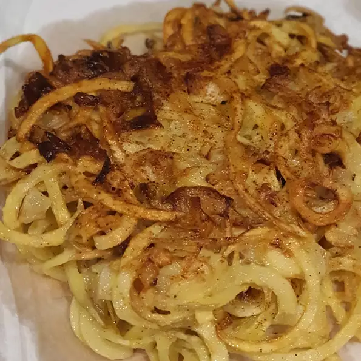

Classic Hashbrowns

Ingredients
- 2 russet potatoes
- 3 tablespoons clarified butter
- Salt and ground black pepper to taste
- 1 pinch cayenne pepper
- 1 pinch paprika
Directions
- Shred potatoes into a large bowl filled with cold water
- Stir until water is cloudly, drain, and cover potatoes again with fresh cold water
- Stir again to dissolve excess starch.
- Drain potatoes well pat dry with paper towels and squeeze out any excess moisture
- Heat clarified butter in a large non-stick pan over medium heat. Sprinke shredded potatoes into the hot butter and season with salt, black pepper amd paprika
- Cook potatoes until a brown crust forms on the bottom, about 5 minutes.
- Continue to cook and stir until potaoes are browned all over
- Serve